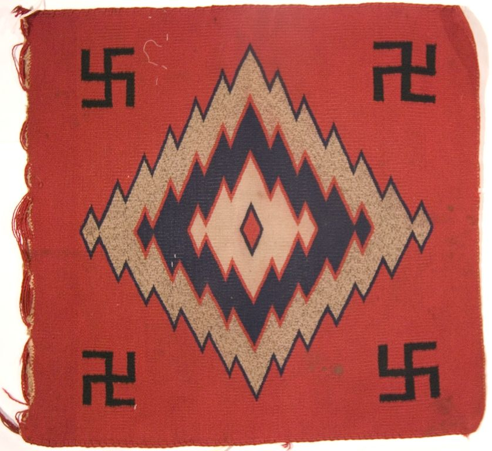

Textiles · 2148-589
Woven Sampler


Red background color, with one edge badly frayed. There is a large central diamond with serrated edges, comprised of concentric blue, red, and white bands. A small red diamond outlined in blue rests in the center. Four black whirling log or ni'di'iidíliii, with one in each corner. Germantown four-ply wool is woven onto a white cotton warp.
Original image caption read '2148-58'; corrected to 2148-589.